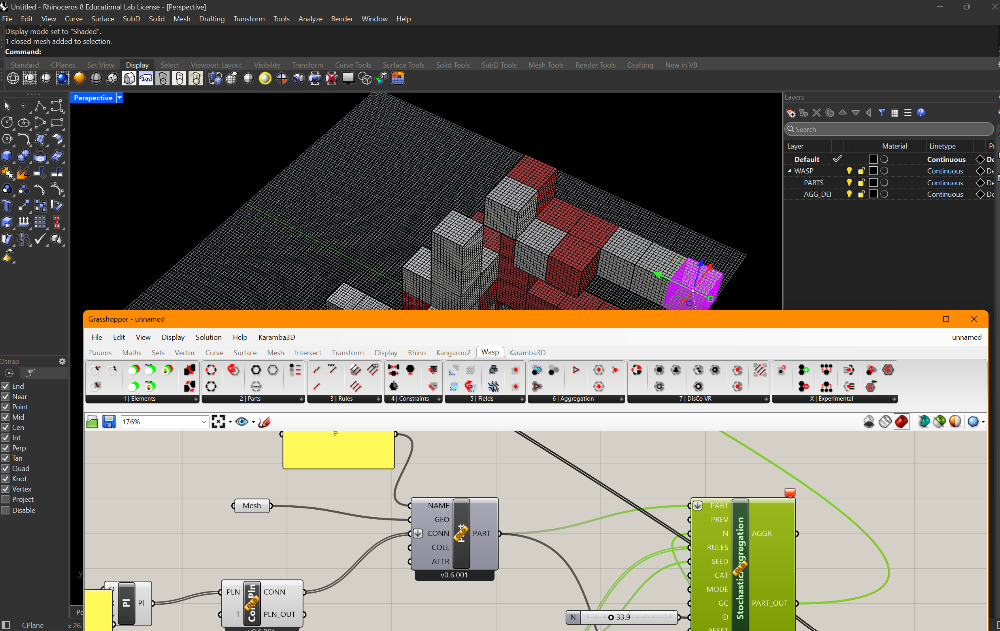

WASP-MCP
You describe the definition in plain language. Claude resolves it against evidence-backed component knowledge — every node it knows, it knows from documentation, not guesswork.
Components land on the live Grasshopper canvas, wired and auto-organised into legible clusters — with explained notes beside each group, so the definition teaches you as it builds itself.
Wasp discrete aggregation executes on the canvas — parts, rules, stochastic growth — geometry the model composed but Grasshopper computes. Nothing is faked in a chat window.
Viewport capture feeds back to the model — it looks at what it made, critiques it, and iterates. The loop that makes it a collaborator, not a code generator.
Why it's different: MCPs for CAD usually generate scripts blind. wasp-mcp works on the canvas itself — the model places real components, runs real solvers, and sees real output. Published on Food4Rhino and the Rhino Package Manager; installable with one PowerShell command.
PYTHON FASTMCP ⇄ TCP 8090 ⇄ .GHA BRIDGE ⇄ GH_DOCUMENT API
